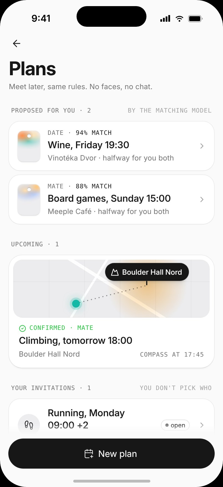
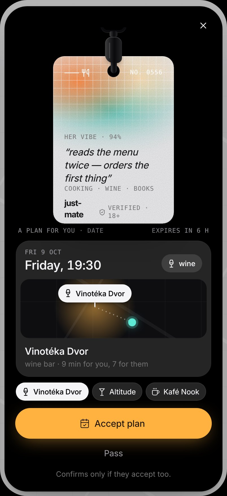
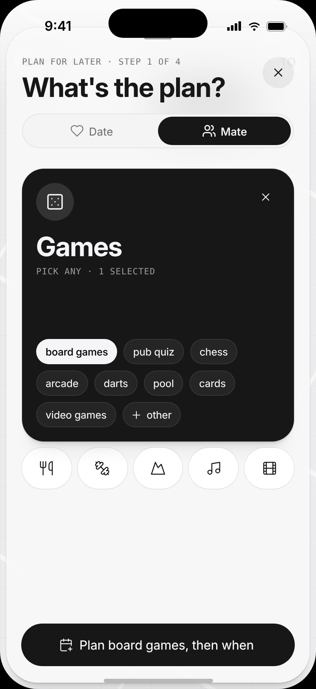
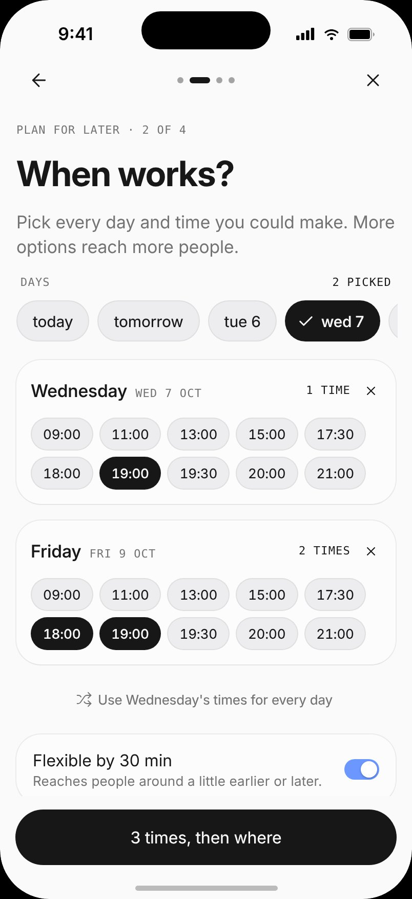
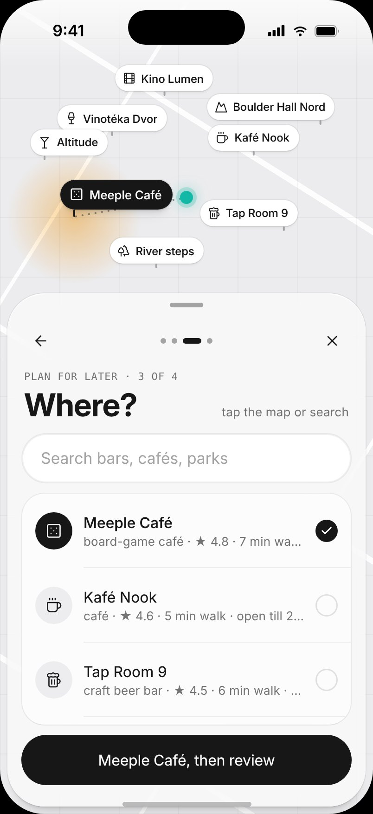
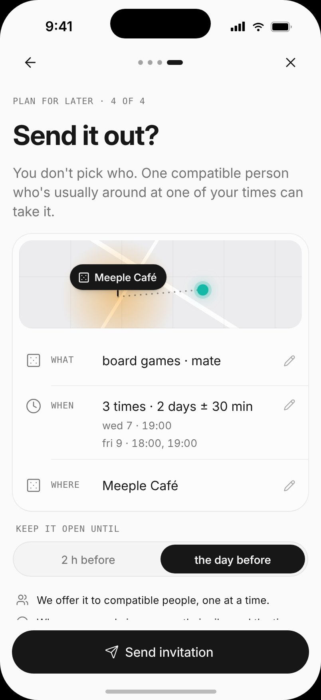
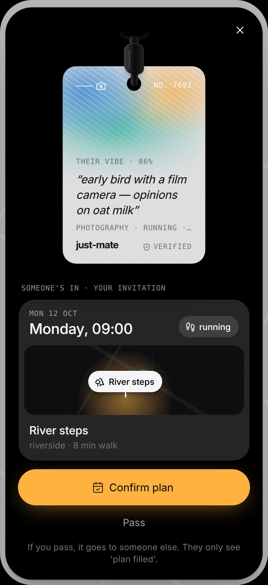
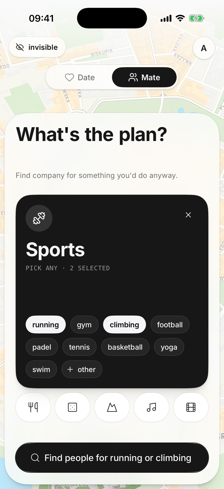

HackYeah 2026 · Kraków · Open task · Sport & Healthcare
Meet for real.
A plan near you, a person who fits, and someone waiting when you get there.
Product & technical whitepaper · October 2026
Abstract
Loneliness affects one in six people worldwide and is linked to more than 871,000 deaths a year1. For a lonely person, the hard part is rarely finding someone online. It is the step out of the door: organising anything feels like too much, nobody may come, and photo-first apps make meeting feel like an audition.
JustMate takes those steps off them. From a faceless profile, the app proposes one concrete 1:1 plan: a compatible person, an activity both picked, an open public venue within a 15-minute walk of both, and a time both are free. The plan is on only when both accept. A compass then guides them to each other with a bearing and a distance bucket, never a position, and first names unlock only when they meet. For people already out, Now pings two compatible people nearby who want the same thing at the same moment.
This paper describes what the build does today, and labels everything else production path. JustMate is not therapy and makes no health claims.
1:1
plans, on only when both accept
15 min
max walk to the venue, for each of you
18
public venues in Kraków, every sport covered
0
photos, chats or location history
Team
Arthur Kozubov · Jozef Zvalo · Andrej Zak · Nikita Orlov · Serhii Vielkin
Code & docs
github.com/uteg-labs/just-mate MIT licence
Contents
Problem · Who it's for · How it works · Matching · Safety & privacy · Health case · Business · Built vs production path · References
JustMate · Whitepaper · HackYeah 2026
01 · The problem
Loneliness and inactivity are health risks at population scale.
1 in 6
people worldwide are affected by loneliness1
871,000
deaths a year are linked to loneliness, about 100 every hour1
2×
lonely people are twice as likely to get depressed1
31%
of adults, 1.8 billion people, don't get enough physical activity5
17–21%
of 13–29-year-olds are lonely, the highest of any age group1
13%
of people in the EU feel lonely most or all of the time2
+50%
higher likelihood of survival with stronger social relationships4
Apps solved matching. The friction is the step out of the door: no reason to go, no one sure to be there, and a fear of being judged.
Barrier 1
Initiative
Low energy makes organising anything, even choosing between options, feel like too much. "Find people now" assumes you are already out and already brave.
Barrier 2
The empty table
"What if nobody comes?" One no-show confirms the story that nobody wants you.
Barrier 3
Judgment
Photo-first apps turn meeting into an audition, and chat turns it into weeks of performance before anything real happens.
Design consequence
Every mechanic in JustMate removes one of the three barriers. And because friendship takes about 50 hours together to go from acquaintance to casual friend3, the product's job is not the first meeting but the second and the tenth. Existing apps earn from attention spent on the phone; JustMate succeeds when the phone goes back in the pocket.
[1] WHO, 30 Jun 2025 · [2] JRC, EU Loneliness Survey 2022 · [3] Hall, 2018 · [4] Holt-Lunstad et al., 2010 · [5] WHO, 26 Jun 2024. Full links on page 10.
02 · Who it's for
Young adults new to a city, with no one to call on a weekday evening.
Primary: 18–35-year-olds who moved for work or study, remote workers, students who haven't found their people, people after a breakup. They can walk, and cities give the density plans need. Loneliness peaks at this age: 17–21% of 13–29-year-olds are lonely1. Secondary: people already out alone, like a traveller on an evening walk, which is the Now loop.
Persona · Tomek, 28
Moved to Kraków for a job. Works from home. Hasn't spoken to anyone all weekend.
Not "depressed", just flat and stuck. Organising anything feels impossible; a Meetup room of 40 strangers feels worse. Swipe apps gave him chats that died.
Sunday night a plan drops in: board games · Sunday 15:00 · Meeple Café, 7 minutes on foot for him and 9 for them, with a vibe line instead of a face: "will lose at chess — will demand a rematch". He taps Accept plan. When the other side accepts too, both phones show you're both in.
At 14:45 the compass opens and walks him there. At the table: "Say hi to Ola." and how far he walked. Then Same again next week? He didn't plan anything, didn't chat with anyone, and knew someone would be there.
A plan for youtheir vibe, the place, the time, minutes on foot for each
The arc we design for
couchflat, no energy to plan
yesone tap: Accept plan
doorthe compass opens 15 min before
tablean activity to do side by side
again"Same again next week?"
Who
Situation
Loop
What JustMate does
Newcomer
Lonely, low energy, never initiates
Plan
Proposes one concrete plan; he only taps Accept plan
Shy person
A date feels like an interview
Plan
An activity first: board games, climbing, a run, at a public venue
Has the energy today
Knows what and where, not who
Plan for later
Their own invitation, offered to one compatible person at a time
Already out
Alone on an evening walk
Now
Pings a compatible person nearby who wants the same thing
Tomek and Ola are the personas of the stage demo. [1] WHO, 30 Jun 2025.
03 · How it works · Plan
The app makes the plan. You only say yes.
Plans are strictly 1:1, in both Mate and Date. They need no chat: the card carries the person's vibe, the activity, the place, the time and when the compass opens.

Plansproposed for you, upcoming, your invitations
A plan for youalternatives as chips
you're both inon both phones at once
Confirmedcompass 15 min before

A Date plansame rules, 18+ only
Proposed from real profiles and free times. The matcher pairs two compatible people and picks an activity both chose, a time inside both people's free slots, and an open public venue within a 15-minute walk of both, the one where nobody walks much further. The card shows walking minutes for each: "7 min for you, 9 for them".
Accept, pass, or suggest a place.Accept plan confirms only if both accept; "waiting for them…" turns into you're both in on both phones at the same moment. Picking an alternative venue turns the button into Suggest this place. Pass is silent: the other side only sees the proposal expire.
Confirmed. The plan card shows the venue, who you're meeting as a vibe, and when the compass opens. Names still unlock only when you meet. Can't make it is one tap; the other side sees "plan cancelled", no reason asked.
The walk. The compass opens 15 minutes before the start and runs for up to 30 minutes, exactly like Now: a bearing and a distance bucket, never a pin. At the table: We met.
Places
18 public venues in Kraków, hand-tagged with activities and opening hours, with every sport covered. Plans only ever happen at public venues, never at an address.
Copy rules
Nobody is told "X declined" or "X passed". A passed proposal simply expires. Declines are silent by construction.
Not in the build
Group plans, status chips, a leave-at time and push reminders are production path. Without push, plans update while the app is open.
Screens from the app on iPhone
03 · How it works · Plan for later and Now
Your own plan, or someone nearby right now.
Plan for later: what, when, where, send
You don't pick who
For the days you have the energy. Pick an activity, several days and times (optionally flexible by 30 minutes) and a public venue. The invitation is offered to one compatible person at a time. The first one in picks one of your times; you see their vibe and Confirm plan or Pass, and then it goes to someone else, who only sees "plan filled".

1 · What

2 · When

3 · Where

4 · Send

Someone's in
Now: already out
Pick what you're up for, a category and one or more things inside it, and tap Find people. You are invisible until then.
Both phones ping at once when a compatible person nearby wants the same thing. The default radius is a 10-minute walk.
Mutual accept. The compass unlocks only if both accept. The session lasts 10 minutes.
Vanish at any moment: one tap, and the session ends for both.

Picksports, games, food…
Searchingvisible only now
The compass: distance as a game, deliberately imprecise
Server sends bearing + bucket
coldover 200 m
warmunder 200 m
hotunder 80 m
burningunder 30 m
An arrow turns with the phone's own heading; colour and haptics escalate as you get closer. The partner's coordinates never reach your phone.
Setting
Value
Walk up to 5 / 10 / 15 min
400 / 800 / 1,200 m
Default Now radius
800 m
Now compass session
10 min
Plan compass opens · runs
T−15 min · 30 min
After meeting
"Say hi to Ola."
Only the first name unlocks, with the distance you walked to get there. Same again next week? is a button; scheduling the pair again is production path. Report is here and on the compass (page 7).
Screens from the app on iPhone · all thresholds are sent by the server in one config
04 · Profile and matching
A faceless profile, an explainable score, a learned model.
Onboarding in about two minutes
Mate or Date. Friends and training partners, or someone to fall for. Switchable on the map.
Interests. At least three; each pick opens related ones.
Four questions written by gpt-4o-mini from your picks, each with four tap-able answers. Fixed questions if the model is unavailable.
A one-line vibe in two lowercase clauses. Reroll until it fits. It is all a match ever sees.
One selfie, described once as text, then dropped: never stored, never shown. The check is simulated in this build.
Every saved profile passes OpenAI moderation; a flagged person is never matched.
Your vibe in Settingsno photo, ever
Hard gates: never learned, never scored
Same mode, and at least one shared activity: the context of the match
Within walking distance: the shorter of both walk settings (Now), or a venue within 15 minutes of both (Plan)
Adults are never matched with minors; Date is 18+ only
Gender and age preferences accepted both ways; not blocked, not paused
Example: 3 shared of 7 distinct interests and a shared intent → 0.7 × 0.43 + 0.3 = 0.60, a match.
The learned model: a Siamese network for Now
Two textswho I am (self) and who I'm looking for (target)
EmbeddingsOpenAI text-embedding-3-small
Shared encoderprojects both into one compatibility space
Match headscores A's target against B's self, both ways
ONNX over HTTPa scorer container the server calls
Where
What scores the pair
Why
Now, real accounts
The Siamese model
Falls back to the explainable score when no model score exists
Plans
The explainable score
Shown as a match percentage, defensible line by line
Stage demo
The explainable score
Deterministic for Tomek and Ola
Honest limit. Before launch there are no real meetings to learn from, so the model is trained on synthetic profiles with rule-based labels. We make no quality claims from those labels. Retraining on real outcomes (who met, who said same again) is production path.
The model's code and training pipeline are in ml/ · the server calls it from server/src/matching
05 · Safety and privacy by design
Meeting strangers is the risk. Safety is the architecture.
The first question about any proximity app is "isn't this a stalker tool?" JustMate is built so the answer is no by construction. Every safety feature is free, forever.
Consent
Mutual by construction
Both must accept before anything unlocks: a plan, a compass. A pass is never forwarded.
Location
A bearing, never a position
The server relays a direction and a distance bucket. A partner's lat/lng never reaches a phone; the protocol has no field for it.
History
No location history
Positions live in server memory only while you search or walk, and are dropped when the session ends. Nothing to leak.
Exit
Vanish
One tap, no confirmation: the session ends for both, instantly, and looks the same whichever side pressed it.
Content
Moderation, no chat
No messaging means no DM channel. Every saved profile passes OpenAI moderation; flagged people are never matched.
Age
Age gates
Adults are never matched with minors, enforced on the server. Date requires 18+.
Report
Report → block
From the compass or after meeting. It blocks that person for you and ends the session.
Abuse
Two reports → pause
Two independent reports pause the reported person from matching and plans.
Help
Support lines
Settings carries "Need to talk to someone?" with 116 123 for adults and 116 111 for children and teens.
Production path
What it adds
Phone and ID verification
One account per number; an optional ID check. Today the selfie check is simulated.
Women-only plans
A free filter, with verified-only matching
Meeting point first
The first compass leads both to a public spot, not to each other
Trusted contact
Share the plan's venue and time through the share sheet
Human review
A person reviews a paused account before any ban; an appeal path
Stored
Account email and password hash; profile: mode, first name, age, interests, answers, vibe, preferences; plans: who and which venue, never where they are.
Never
Any photo of you. Location history. Messages. Mood or health data. Anyone's coordinates on your phone.
GDPR / RODO: location is processed only inside an explicit, session-scoped choice to search or walk, and never stored. A data protection impact assessment before launch is production path. The demo runs on test data only.
"No pins" is a hard rule of the protocol: the client never receives or holds a partner's position
06 · Health, sport and wellbeing
Meet, move, look up. And come back again.
JustMate changes what people do, not how they feel about it: they meet someone in person, walk to get there, and put the phone away while they talk. The value comes from repeated, active, in-person contact.
16 of 44
Mate activities are sport or outdoors
5–15 min
on foot before every meeting
0
feeds, likes or streaks to keep you on the phone
Pathway
What JustMate does
Why it matters
Meet
Every flow ends face to face. No chat to get stuck in; "Same again next week?" points at the second meeting.
Stronger social relationships: 50% higher likelihood of survival4. Friendship takes ~50 hours together3.
Move
Every meeting starts on foot: a 5-, 10- or 15-minute walk. 16 of 44 Mate activities are sport or outdoors (running, climbing, padel, football, yoga, cycling…), each with a public venue in Kraków.
31% of adults don't get enough physical activity5. A partner turns "I should" into a fixed time.
Look up
No feed, no likes, no streaks: nothing to scroll. Time in the app is an anti-metric.
Time in company with the phone away.
Small step
A vibe instead of a face, a mutual yes, a fixed time and a public place. Declines are silent.
Going out becomes possible on a low-energy day.
The line we hold
Not therapy. A reason to go out.
No health claims. Software that treats a condition is a medical device under EU MDR 2017/745. We never say JustMate treats anything.
No mood data. Mood and health are special-category data under GDPR Art. 9. We never ask how you feel.
No guilt mechanics. No streaks to lose, no "you haven't gone out in a week".
Signposting. Support lines in Settings. The app never plays counsellor.
How we will measure it, without health data
Planned
Show-ups
Share of confirmed plans where both people tap We met. Target: at least 80% of confirmed attendees.
Repeat meetings
Share of active users who meet the same person at least twice in 30 days. Repetition is how a friendship starts.
Loneliness · UCLA-3
The 3-item UCLA Loneliness Scale at sign-up and after 8 weeks: opt-in, anonymous, aggregated, never stored on a profile.
Also watched: the share of meetings that are sport or outdoors, and minutes walked to meet, in aggregate only. Anti-metric: time in the app should not grow.
[3] Hall, 2018 · [4] Holt-Lunstad et al., 2010 · [5] WHO, 26 Jun 2024 · activity count from the CATEGORIES list in @justmate/protocol
07 · Business model
Venues pay. People meet for free.
Meeting is never paywalled and safety is never paywalled. Those who earn from people going out, venues and events, pay most. Every figure on this page is our estimate, to be replaced with real quotes.
Stream
How it works
Price (est.)
Partner venues primary
Cafés, board-game bars, climbing gyms list plan slots for off-peak tables. They see counts and check-ins, never identities.
~€39 / month
Prepaid first round
An optional €5 voucher at partner venues, sold as a wallet top-up; doubles as a commitment device.
15% kept
JustMate+
Reach and convenience, not access: several open invitations at once, travel mode, private plans.
€4.99 / month
Events and festivals
Official plans for a known, opt-in crowd.
€500–2,000
Back of the envelope: one city, 5,000 monthly active users
Monthly cost
Assumption
€
Hosting
API, PostgreSQL, backups
~100
LLM
~1,000 new users × ~€0.01
~20
Phone checks
1,000 × ~€0.07
~70
ID checks
40% of new users × ~$0.80
~300
Moderation
20 h × €15
~300
Stores, email
Apple fee, email plan
~30
Total
~820
Monthly revenue
Assumption
€
Venues
25 × €39
~975
Prepaid round
900 vouchers, net of card fees
~380
JustMate+
150 × €4.99, net of VAT and fees
~520
Events
1 festival a quarter
~330
Total
~2,200
Readout: about 21 partner venues at ~€39 cover a city's ~€820 running cost on their own; everything else is margin toward a team. Source: our estimates in docs/PRODUCT.md §16.3.
Rejected on purpose
"Five free connections, then pay". It charges lonely people for the one thing they came for and rewards rationing meetings. Never: ads in the meeting flow, selling data, a paid safety feature.
Launch: plans lower the density bar
Now needs two people in the same minute; a plan needs one compatible person within a walk over a day or two. A city opens with plans, one campus and a few partner venues first.
All revenue streams are production path · core matching, plans and safety stay free
08 · What's built, what's next
Built and demoed, or labelled production path.
Built and demoed
Plans, 1:1: proposed from real profiles and free times, Accept plan, you're both in, Suggest this place, silent Pass, Plan for later one person at a time
Now: both phones pinged at once, mutual accept, 10-minute session
Compass: bearing + bucket relay, haptics; Vanish
After meeting: first name and distance walked
Safety: Report blocks and ends the session; two reports pause; moderation; age gates; support lines
Matching: explainable score; Siamese model for Now on real accounts
Onboarding: LLM questions and vibe line
18 public venues in Kraków · English, Polish, Slovak · 134+ server tests in CI · demo mode with Tomek and Ola
Production path
"Same again next week?" scheduling (today a button)
Phone and ID verification (selfie check simulated today)
Women-only plans, meeting point first, trusted contact, human review
Group plans, status chips, push reminders
Partner venues and prepaid first round
UCLA-3 outcome survey with a research partner
Retraining the model on real meetings; DPIA
Stack
Expo dev-client app (iOS, Android) · Bun + Elysia + Drizzle on PostgreSQL · one WebSocket per phone · a typed protocol package shared by app and server · OpenAI gpt-4o-mini and moderation · ONNX scorer over HTTP
[4]Holt-Lunstad, J., Smith, T. B., Layton, J. B. (2010). Social Relationships and Mortality Risk: A Meta-analytic Review. PLoS Medicine. https://doi.org/10.1371/journal.pmed.1000316
Figures from the repository, not external: 16 of 44 Mate activities, 18 venues, 134+ tests. Business figures are our estimates.
AI use: AI tools helped with ideation and boilerplate; the idea, mechanic and solution are the team's. In the product, gpt-4o-mini writes onboarding questions and vibe lines, and OpenAI moderation screens profiles. A Siamese model trained on synthetic profiles scores Now matches; plans use an explainable score. Maps: Apple Maps and Google Maps. Type: Inter.
Arthur KozubovJozef ZvaloAndrej ZakNikita OrlovSerhii Vielkin
Not therapy. A reason to go out, and someone waiting when you get there.
github.com/uteg-labs/just-mate · MIT licence · Meet for real.